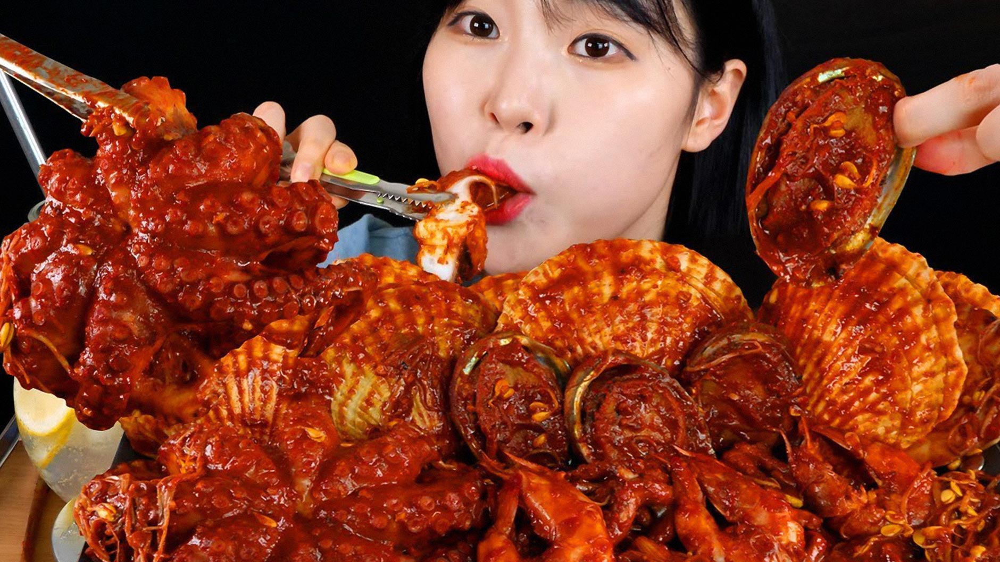
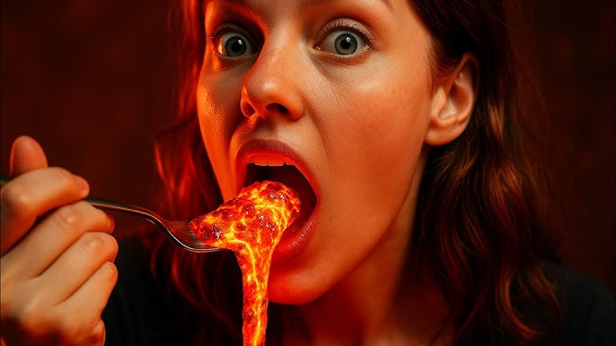

Muk-Bang |
|||
|---|---|---|---|
| ¿Qué es un Muk-Bang?
Es una transmisión en vivo (o grabación) que se originó en Corea del Sur, donde las personas comen grandes cantidades de comida mientras interactúan con su audiencia en caso de que estén en vivo. |
Audiencia
|
||
Impacto y efectos
|
Tipos
|
||
| Futuro
El futuro del mukbang se aleja del consumo excesivo. Se enfocará en la calidad del contenido, con más diversidad de temas, como comida vegana o de diferentes culturas, y buscará un balance entre entretenimiento, salud y responsabilidad hacia los que consumen ese contenido. |
|||
|  |  | ||